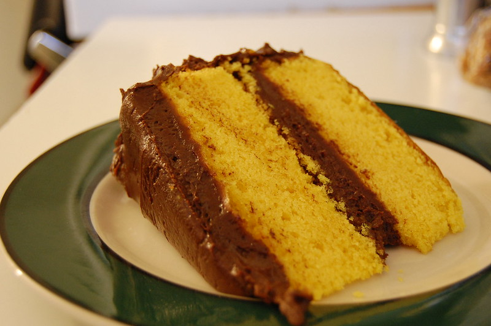

Yellow Cake Recipe

World Famous Yellow Cake Recipe
This yellow cake recipe has yet to disappoint, and I'm so
glad I have the priviledge of sharing it today. Thankfully
the ingredients are quite simple to grab, but technique
is key! Follow along with my instructions, and you'll enjoy
a decadent yellow cake in no time.
Ingredients
- all-purpose flour
- corn starch
- granulated sugar
- baking powder
- salt
- unsalted butter
- vegetable oil
- 3 eggs
- vanilla extract
- buttermilk
- frosting of your choice
Steps
- step one is to do this
- step two is to do this
- step three is to do this
- step four is to do this
- step five is to do this
- step six is to do this
Home